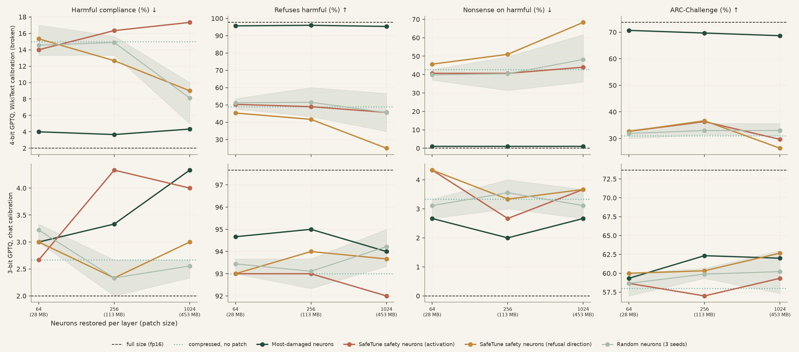
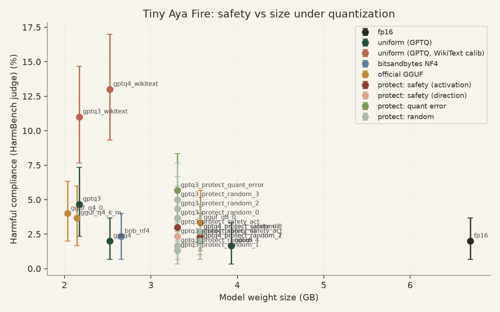

Compression Safety Check
A simple way to see if a compressed AI model still refuses harmful requests, before you ship it.
A common way of shrinking the model quietly broke its safety. Restoring 0.6% of its weights fixed it.
A closer look
Original model on top, this version below.
Each dot is a version; yours is circled. Lower is safer.
This is the badly compressed 4-bit model (grade F). Turn on the 28 MB patch to write the original numbers back into its 2,304 most-damaged neurons.
Where the patch edits the model
36 layers, from where text enters (left) to where words come out (right). Darker means more neurons restored. The most-damaged neurons sit at the edges; the “safety neurons” sit in the middle.
Every version at a glance
Patch size: does a bigger patch help more?
Second model: does the repair replicate on Tiny Aya Earth?
| Tiny Aya Earth | Helps with harmful | Refuses harmful | Nonsense | Quiz (ARC) |
|---|---|---|---|---|
| Original (16-bit) | 2.7% | 95.0% | 0.3% | 75.3% |
| 4-bit, plain-text calibration | 7.0% | 30.0% | 66.0% | 24.7% |
| + 28 MB repair patch | 3.7% | 94.3% | 1.3% | 75.3% |
| 3-bit, plain-text calibration | 5.7% | 17.0% | 80.7% | 22.0% |
| + 28 MB repair patch | 14.0% | 80.0% | 11.3% | 56.0% |
Full results


What we observed
Shrunk with plain encyclopedia text as its calibration examples, the 4-bit model stopped behaving like a chat assistant: 43% of its replies to harmful questions were nonsense, often lines of Python code. Refusals fell from 98% to 49%, yet the standard quality score (perplexity) looked normal.
What the evidence suggests
Rounding is shared across groups of 128 weights. A neuron with a few extreme values gets rounded far more coarsely than its neighbours. A small set of neurons, mostly in the first and last layers, was damaged far more than the rest. Restoring exactly those repaired the model; restoring “safety neurons” or random ones did not.
Our interpretation
The damage broke the model's general conversational machinery. A model that can't form a proper reply can't form a refusal either, so safety failed as a side effect.
Black: the real weights. Coloured: after rounding. A simplified illustration with plain rounding; the study used GPTQ, which compensates better but suffers from the same effect.